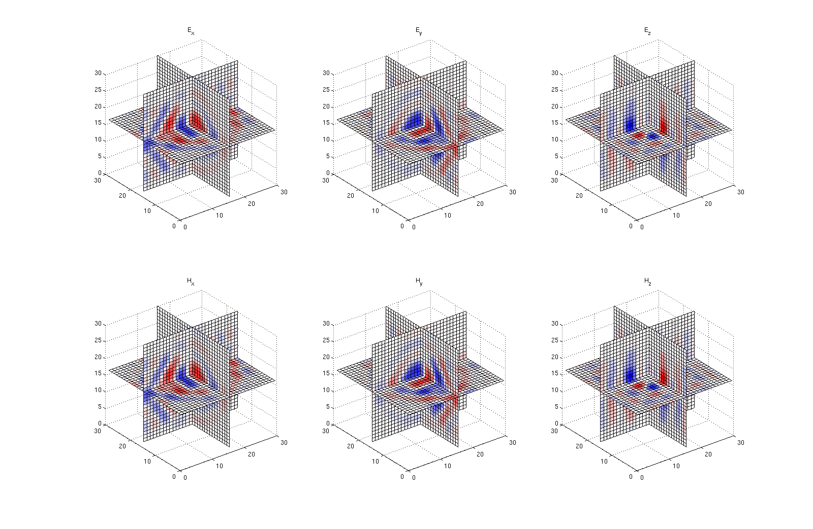

3D Maxwell's equation
Contents
set parameters
method = 'fourier';
nd = 3;
L = 1e3*ones(1,nd);
N = 30*ones(1,nd);
Ns = 10*ones(1,nd);
T = 1e-6;
eps0 = 8.85e-12;
mu0 = 1.25e-6;
define matrices etc.
Grad = opGrad(Ns,L,method,true);
Curl = opCurl(Ns,L,method,true);
xc = Curl.x{1};
yc = Curl.x{2};
zc = Curl.x{3};
[xxc,yyc,zzc] = ndgrid(xc,yc,zc);
S = [opZeros(nd*prod(Ns)) Curl; -Curl' opZeros(nd*prod(Ns))];
eps = eps0*ones(Ns);
mu = (mu0)*ones(Ns);
M = opDiag([eps(:);eps(:);eps(:);mu(:);mu(:);mu(:)]);
x = linspace(0,L(1),N(1));
y = linspace(0,L(2),N(2));
z = linspace(0,L(3),N(3));
A = opKron(opInt(zc,z,method),opInt(yc,y,method),opInt(xc,x,method));
w0 = zeros([Ns 6]);
w0(:,:,:,1) = (yyc - mean(yc)).*exp(-1e3*(((xxc - mean(xc))/L(1)).^2 + ((yyc - mean(yc))/L(2)).^2 + ((zzc - mean(zc))/L(3)).^2));
w0(:,:,:,2) = -(xxc - mean(xc)).*exp(-1e3*(((xxc - mean(xc))/L(1)).^2 + ((yyc - mean(yc))/L(2)).^2 + ((zzc - mean(zc))/L(3)).^2));
w0 = w0(:)/max(abs(w0(:)));
solve ODE
tic
options = odeset('Stats','on');
[t,wsol] = ode23(@(t,w)-(M\(S*w)),[0 T],w0,options) ;
toc
2374 successful steps
215 failed attempts
7768 function evaluations
Elapsed time is 38.674411 seconds.
plot
wsol = reshape(wsol,[length(t) prod(Ns) 6]);
plotslice = @(u) slice(u,floor(N(1)/2) + 1,floor(N(2)/2) + 1,floor(N(3)/2) + 1);
for j=1:10:length(t);
exj = reshape(A*squeeze(wsol(j,:,1).'),N);
eyj = reshape(A*squeeze(wsol(j,:,2).'),N);
ezj = reshape(A*squeeze(wsol(j,:,3).'),N);
hxj = reshape(A*squeeze(wsol(j,:,1).'),N);
hyj = reshape(A*squeeze(wsol(j,:,2).'),N);
hzj = reshape(A*squeeze(wsol(j,:,3).'),N);
subplot(2,3,1);
plotslice(exj);title('E_x');colormap(gray);
subplot(2,3,2);
plotslice(eyj);title('E_y');colormap(gray);
subplot(2,3,3);
plotslice(ezj);title('E_z');colormap(gray);
subplot(2,3,4);
plotslice(hxj);title('H_x');colormap(gray);
subplot(2,3,5);
plotslice(hyj);title('H_y');colormap(gray);
subplot(2,3,6);
plotslice(hzj);title('H_z');colormap(gray);
drawnow;
pause(.001);
end
